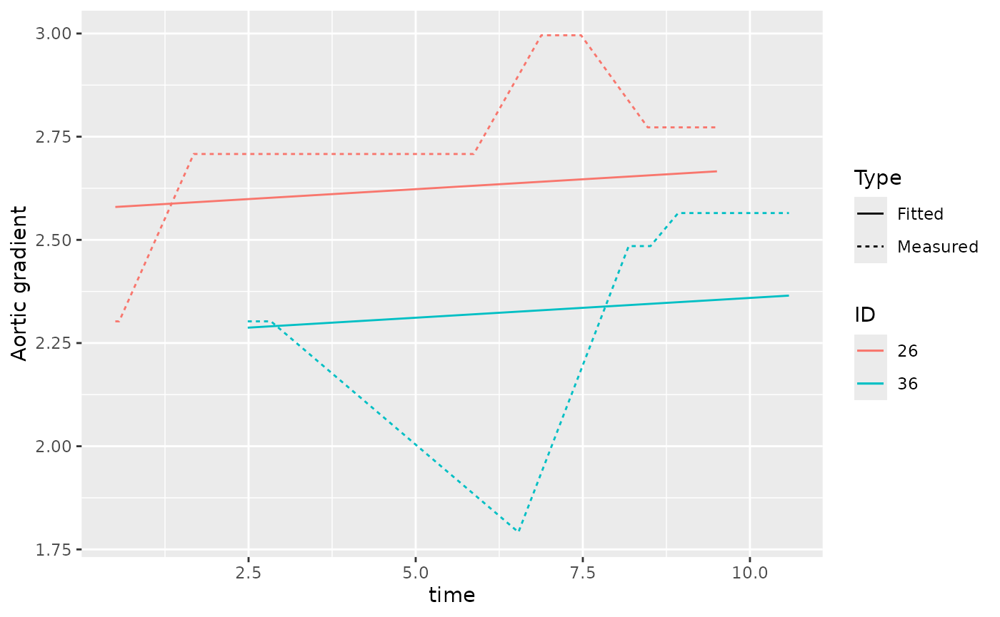

joineRML and the broom package
Alessandro Gasparini and Graeme L. Hickey
2026-11-24
Source:vignettes/joineRML-tidy.Rmd
joineRML-tidy.RmdIntroduction
joineRML provides three broom-compatible methods for fitted joint models:
-
tidy()returns coefficient estimates, standard errors, and optional confidence intervals. -
augment()adds longitudinal fitted values and residuals to the original observations. -
glance()returns a one-row summary of model fit and sample sizes.
These methods support plots, model comparisons, and tables. They can be used without loading broom; if broom is loaded, the same joineRML methods are used regardless of package loading order. Unsupported arguments cause an error rather than being silently ignored.
Example
We use the sample example from the introductory vignette to
joineRML using the heart valve data.
We analyse only the records with case-complete data for heart valve
gradient (grad) and left ventricular mass index
(lvmi):
Further to that, we only select the first 50 individuals to speed up these examples:
hvd <- hvd[hvd$num <= 50, ]
set.seed(12345)
fit <- mjoint(
formLongFixed = list(
"grad" = log.grad ~ time + sex + hs,
"lvmi" = log.lvmi ~ time + sex
),
formLongRandom = list(
"grad" = ~ 1 | num,
"lvmi" = ~ time | num
),
formSurv = Surv(fuyrs, status) ~ age,
data = list(hvd, hvd),
timeVar = "time"
)## Running multivariate LMM EM algorithm to establish initial parameters...## Finished multivariate LMM EM algorithm...## EM algorithm has converged!## Calculating post model fit statistics...
tidy method
The tidy method returns a tidy dataset with model
estimates.
tidy(fit)## # A tibble: 3 × 8
## term estimate std.error statistic p.value component outcome effect
## <chr> <dbl> <dbl> <dbl> <dbl> <chr> <chr> <chr>
## 1 age 0.137 0.0665 2.05 0.0401 survival event fixed
## 2 gamma_1 2.85 3.73 0.763 0.446 survival grad association
## 3 gamma_2 3.68 3.45 1.07 0.286 survival lvmi associationBy default the tidy method returns the estimated
coefficients for the survival component of the joint model; however, it
is possible to extract each component by setting the
component argument:
tidy(fit, component = "longitudinal")## # A tibble: 7 × 8
## term estimate std.error statistic p.value component outcome effect
## <chr> <dbl> <dbl> <dbl> <dbl> <chr> <chr> <chr>
## 1 (Intercept)_1 2.52 0.165 15.2 1.70e-52 longitud… grad fixed
## 2 time_1 0.00951 0.0307 0.310 7.56e- 1 longitud… grad fixed
## 3 sex_1 0.0344 0.231 0.149 8.82e- 1 longitud… grad fixed
## 4 hsStentless va… 0.0825 0.199 0.415 6.78e- 1 longitud… grad fixed
## 5 (Intercept)_2 4.99 0.0818 61.1 0 longitud… lvmi fixed
## 6 time_2 0.0258 0.0129 2.00 4.58e- 2 longitud… lvmi fixed
## 7 sex_2 -0.197 0.211 -0.934 3.50e- 1 longitud… lvmi fixedUse component = "all" to combine both components. The
component, outcome, and effect
columns distinguish longitudinal fixed effects, survival covariates, and
latent association coefficients. Outcome labels use the names supplied
in formLongFixed, or the response expressions if the list
was unnamed. Existing coefficient names are retained.
tidy(fit, component = "all", conf.int = TRUE)## # A tibble: 10 × 10
## term estimate std.error statistic p.value conf.low conf.high component
## <chr> <dbl> <dbl> <dbl> <dbl> <dbl> <dbl> <chr>
## 1 (Intercep… 2.52 0.165 15.2 1.70e-52 2.20e+0 2.85 longitud…
## 2 time_1 0.00951 0.0307 0.310 7.56e- 1 -5.06e-2 0.0696 longitud…
## 3 sex_1 0.0344 0.231 0.149 8.82e- 1 -4.19e-1 0.488 longitud…
## 4 hsStentle… 0.0825 0.199 0.415 6.78e- 1 -3.08e-1 0.473 longitud…
## 5 (Intercep… 4.99 0.0818 61.1 0 4.83e+0 5.15 longitud…
## 6 time_2 0.0258 0.0129 2.00 4.58e- 2 4.84e-4 0.0512 longitud…
## 7 sex_2 -0.197 0.211 -0.934 3.50e- 1 -6.09e-1 0.216 longitud…
## 8 age 0.137 0.0665 2.05 4.01e- 2 6.17e-3 0.267 survival
## 9 gamma_1 2.85 3.73 0.763 4.46e- 1 -4.47e+0 10.2 survival
## 10 gamma_2 3.68 3.45 1.07 2.86e- 1 -3.08e+0 10.4 survival
## # ℹ 2 more variables: outcome <chr>, effect <chr>It is also possible to require confidence intervals to be calculated
by setting conf.int = TRUE, and modify the confidence level
by setting the conf.level argument:
tidy(fit, conf.int = TRUE)## # A tibble: 3 × 10
## term estimate std.error statistic p.value conf.low conf.high component
## <chr> <dbl> <dbl> <dbl> <dbl> <dbl> <dbl> <chr>
## 1 age 0.137 0.0665 2.05 0.0401 0.00617 0.267 survival
## 2 gamma_1 2.85 3.73 0.763 0.446 -4.47 10.2 survival
## 3 gamma_2 3.68 3.45 1.07 0.286 -3.08 10.4 survival
## # ℹ 2 more variables: outcome <chr>, effect <chr>
tidy(fit, conf.int = TRUE, conf.level = 0.99)## # A tibble: 3 × 10
## term estimate std.error statistic p.value conf.low conf.high component
## <chr> <dbl> <dbl> <dbl> <dbl> <dbl> <dbl> <chr>
## 1 age 0.137 0.0665 2.05 0.0401 -0.0348 0.308 survival
## 2 gamma_1 2.85 3.73 0.763 0.446 -6.77 12.5 survival
## 3 gamma_2 3.68 3.45 1.07 0.286 -5.20 12.6 survival
## # ℹ 2 more variables: outcome <chr>, effect <chr>For the survival component, exponentiate = TRUE returns
exponentiated estimates and confidence limits. Standard errors and test
statistics remain on the log-hazard scale. For a baseline covariate, the
exponentiated coefficient is its conditional hazard ratio per unit
increase, holding other terms fixed. For an association coefficient, the
unit refers to its latent process rather than the observed marker.
Exponentiation is rejected for longitudinal or combined output.
tidy(fit, conf.int = TRUE, exponentiate = TRUE)## # A tibble: 3 × 10
## term estimate std.error statistic p.value conf.low conf.high component
## <chr> <dbl> <dbl> <dbl> <dbl> <dbl> <dbl> <chr>
## 1 age 1.15 0.0665 2.05 0.0401 1.01 1.31 survival
## 2 gamma_1 17.2 3.73 0.763 0.446 0.0115 25945. survival
## 3 gamma_2 39.7 3.45 1.07 0.286 0.0460 34187. survival
## # ℹ 2 more variables: outcome <chr>, effect <chr>The standard errors reported by default are based on the empirical
information matrix, as in mjoint. It is of course possible
to use bootstrapped standard errors as follows:
bSE <- bootSE(fit,
nboot = 100,
safe.boot = TRUE,
progress = FALSE,
ncores = 1L)
tidy(fit, bootSE = bSE, conf.int = TRUE)The spelling boot_se = bSE, used by broom, is also
accepted. Supply only one of bootSE and
boot_se. Both use the supplied bootstrap standard errors in
normal-approximation confidence intervals.
The results of this example are not included as it would take too long to run for CRAN.
The tidy method is useful for custom plotting
(e.g. forest plots) of results from joineRML models, all in
a tidy framework:
library(ggplot2)
out <- tidy(fit, conf.int = TRUE)
ggplot(out, aes(x = term, y = estimate, ymin = conf.low, ymax = conf.high)) +
geom_point() +
geom_errorbar()
augment method
The augment method returns a dataset with added
predictions from the joint model. In particular, population-level and
individual-level fitted values and residuals are added to the data frame
returned by the method:
preds <- augment(fit)
head(preds[, c("num", "log.grad", ".fitted_grad_0", ".fitted_grad_1", ".resid_grad_0", ".resid_grad_1")])## # A tibble: 6 × 6
## num log.grad .fitted_grad_0 .fitted_grad_1 .resid_grad_0 .resid_grad_1
## <fct> <dbl> <dbl> <dbl> <dbl> <dbl>
## 1 1 2.30 2.60 2.42 -0.302 -0.113
## 2 1 2.30 2.64 2.45 -0.337 -0.148
## 3 1 2.30 2.65 2.46 -0.346 -0.158
## 4 10 2.20 2.56 2.40 -0.364 -0.201
## 5 10 2.20 2.60 2.43 -0.398 -0.236
## 6 11 3.69 2.61 2.65 1.08 1.04
head(preds[, c("num", "log.lvmi", ".fitted_lvmi_0", ".fitted_lvmi_1", ".resid_lvmi_0", ".resid_lvmi_1")])## # A tibble: 6 × 6
## num log.lvmi .fitted_lvmi_0 .fitted_lvmi_1 .resid_lvmi_0 .resid_lvmi_1
## <fct> <dbl> <dbl> <dbl> <dbl> <dbl>
## 1 1 4.78 4.99 4.75 -0.214 0.0292
## 2 1 4.78 5.09 4.87 -0.309 -0.0867
## 3 1 4.92 5.11 4.90 -0.190 0.0267
## 4 10 5.14 5.10 5.06 0.0377 0.0723
## 5 10 5.13 5.19 5.17 -0.0635 -0.0397
## 6 11 5.03 5.00 5.05 0.0303 -0.0263By default, rows follow the fitted subject-time order. Supplying
data = hvd returns the original observations in that
dataset’s order, matched by subject ID and measurement time. All
original columns must be present and unchanged; subject-time pairs must
be unique if reordering is needed. Outcomes with different observation
schedules cannot be combined into this single data frame.
augment() does not accept newdata; use
dynLong() or dynSurv() for dynamic
predictions.
We can plot the resulting predictions for four distinct individuals:
out <- preds[preds$num %in% c(26, 36, 227, 244), ]
ggplot(out, aes(x = time, colour = num)) +
geom_line(aes(y = log.grad, linetype = "Measured")) +
geom_line(aes(y = .fitted_grad_1, linetype = "Fitted")) +
labs(linetype = "Type", colour = "ID", y = "Aortic gradient")
glance method
The glance method allows extracting summary statistics
from the joint model:
glance(fit)## # A tibble: 1 × 11
## sigma_1 sigma_2 AIC BIC logLik nobs nevent npar converged
## <dbl> <dbl> <dbl> <dbl> <dbl> <int> <dbl> <dbl> <lgl>
## 1 0.517 0.158 342. 374. -153. 43 8 18 TRUE
## # ℹ 2 more variables: nobs_longitudinal_1 <int>, nobs_longitudinal_2 <int>nobs is the number of subjects, agreeing with
nobs(fit) and the sample size used by BIC.
nevent counts observed events, and
nobs_longitudinal_1, nobs_longitudinal_2, and
so on count measurements for each outcome in formula order.
npar is the parameter count used by AIC and BIC, excluding
baseline hazard increments. converged records whether the
fitting criterion was met. These summaries are available even when
post-fit standard errors were not requested.
The sigma_1, sigma_2, and subsequent
columns contain residual standard deviations, agreeing with
sigma(fit) and summary(fit)$sigma. The stored
coef(fit)$sigma2 values are variances. For example, a
residual variance of 0.25 corresponds to a residual standard deviation
of 0.5. Bootstrap residual estimates and confidence intervals remain on
the variance scale, and bootSE() reports standard errors of
the variance estimates.
sigma(fit) # Residual standard deviations, named by outcome## grad lvmi
## 0.5171520 0.1581865
coef(fit)$sigma2 # Residual variances## sigma2_1 sigma2_2
## 0.26744623 0.02502296This allows comparing competing models easily. Say for instance that we fit a second model with only random intercepts:
set.seed(67890)
fit2 <- mjoint(
formLongFixed = list(
"grad" = log.grad ~ time + sex + hs,
"lvmi" = log.lvmi ~ time + sex
),
formLongRandom = list(
"grad" = ~ 1 | num,
"lvmi" = ~ 1 | num
),
formSurv = Surv(fuyrs, status) ~ age,
data = list(hvd, hvd),
timeVar = "time"
)## Running multivariate LMM EM algorithm to establish initial parameters...## Finished multivariate LMM EM algorithm...## EM algorithm has converged!## Calculating post model fit statistics...We can go ahead and compare the models in terms of AIC and BIC:
glance(fit)## # A tibble: 1 × 11
## sigma_1 sigma_2 AIC BIC logLik nobs nevent npar converged
## <dbl> <dbl> <dbl> <dbl> <dbl> <int> <dbl> <dbl> <lgl>
## 1 0.517 0.158 342. 374. -153. 43 8 18 TRUE
## # ℹ 2 more variables: nobs_longitudinal_1 <int>, nobs_longitudinal_2 <int>
glance(fit2)## # A tibble: 1 × 11
## sigma_1 sigma_2 AIC BIC logLik nobs nevent npar converged
## <dbl> <dbl> <dbl> <dbl> <dbl> <int> <dbl> <dbl> <lgl>
## 1 0.515 0.173 342. 369. -156. 43 8 15 TRUE
## # ℹ 2 more variables: nobs_longitudinal_1 <int>, nobs_longitudinal_2 <int>Compare AIC and BIC only for models fitted to the same observations, and check convergence before interpreting the comparison.
Extracting a model component
The following methods describe a selected longitudinal fixed-effects model. Coefficient names and covariance-matrix names agree with its design columns:
nobs(fit)## [1] 43
terms(fit, process = "Longitudinal", k = 2)## log.lvmi ~ time + sex
## attr(,"variables")
## list(log.lvmi, time, sex)
## attr(,"factors")
## time sex
## log.lvmi 0 0
## time 1 0
## sex 0 1
## attr(,"term.labels")
## [1] "time" "sex"
## attr(,"order")
## [1] 1 1
## attr(,"intercept")
## [1] 1
## attr(,"response")
## [1] 1
## attr(,".Environment")
## <environment: R_GlobalEnv>
## attr(,"predvars")
## list(log.lvmi, time, sex)
## attr(,"dataClasses")
## log.lvmi time sex
## "numeric" "numeric" "numeric"
head(model.frame(fit, process = "Longitudinal", k = 2))## log.lvmi time sex
## 1 4.778955 0.0109589 0
## 2 4.778955 3.6794520 0
## 3 4.924569 4.6958900 0
## 43 5.137150 4.1205480 0
## 44 5.129366 7.7342470 0
## 45 5.027165 0.1534247 0
head(model.matrix(fit, process = "Longitudinal", k = 2))## (Intercept) time sex
## 1 1 0.0109589 0
## 2 1 3.6794520 0
## 3 1 4.6958900 0
## 43 1 4.1205480 0
## 44 1 7.7342470 0
## 45 1 0.1534247 0
coef(fit, process = "Longitudinal", k = 2)## (Intercept) time sex
## 4.99293606 0.02584591 -0.19671311
vcov(fit, process = "Longitudinal", k = 2)## (Intercept) time sex
## (Intercept) 0.0066862346 -0.0002348949 -0.0015748512
## time -0.0002348949 0.0001674460 -0.0005463331
## sex -0.0015748512 -0.0005463331 0.0443159100Model frames contain evaluated terms, including transformations. Fitted contrasts are retained, so extraction is unaffected by subsequent changes to the original dataset or R’s contrast options. These methods extract the fitted observations and do not accept new data.
Use process = "Event" for the survival formula. Its
design matrix contains baseline covariates, without an intercept or
latent association columns. Event coefficient and covariance selections
include both baseline covariates and association coefficients:
head(model.matrix(fit, process = "Event"))## age
## 1 75.06027
## 43 72.12329
## 45 70.56712
## 51 50.97534
## 56 69.94247
## 62 72.30685
coef(fit, process = "Event")## age gamma_1 gamma_2
## 0.1365893 2.8471790 3.6800987
vcov(fit, process = "Event")## age gamma_1 gamma_2
## age 0.004427543 -0.03287174 -0.03879102
## gamma_1 -0.032871736 13.93535531 -6.12718700
## gamma_2 -0.038791016 -6.12718700 11.89414499The default coef(fit) still returns the original
parameter list, and vcov(fit) still returns the covariance
matrix for all main parameters. Selecting longitudinal coefficients
without k returns all outcomes, retaining their numbered
suffixes. Covariance extraction requires available post-fit standard
errors.
Tables with modelsummary and gtsummary
These optional packages can format the extracted results. Supplying the tidied estimates explicitly makes the selected component and reported sample sizes clear.
For modelsummary, combine tidy() and
glance() in a modelsummary_list object:
table_model <- structure(
list(tidy = tidy(fit, conf.int = TRUE), glance = glance(fit)),
class = "modelsummary_list"
)
modelsummary::modelsummary(
list("Joint model" = table_model),
gof_map = data.frame(
raw = c("nobs", "nevent", "AIC", "BIC"),
clean = c("Subjects", "Events", "AIC", "BIC"),
fmt = c(0, 0, 1, 1)
),
output = "markdown"
)| Joint model | |
|---|---|
| age | 0.137 |
| (0.067) | |
| gamma_1 | 2.847 |
| (3.733) | |
| gamma_2 | 3.680 |
| (3.449) | |
| Subjects | 43 |
| Events | 8 |
| AIC | 342.4 |
| BIC | 374.1 |
For gtsummary, format the combined coefficient table directly. This retains all outcome labels and avoids treating the joint model as a single regression formula:
table_data <- tidy(fit, component = "all", conf.int = TRUE)
table_data <- table_data[c("component", "outcome", "term", "estimate",
"conf.low", "conf.high", "p.value")]
gtsummary::as_gtsummary(table_data) |>
gtsummary::modify_header(
component = "Component", outcome = "Outcome", term = "Term",
estimate = "Estimate", conf.low = "Lower 95% CI",
conf.high = "Upper 95% CI", p.value = "p-value"
) |>
gtsummary::modify_fmt_fun(
c(estimate, conf.low, conf.high) ~ gtsummary::label_style_number(digits = 3),
p.value ~ gtsummary::label_style_pvalue(digits = 3)
)| Component | Outcome | Term | Estimate | Lower 95% CI | Upper 95% CI | p-value |
|---|---|---|---|---|---|---|
| longitudinal | grad | (Intercept)_1 | 2.522 | 2.198 | 2.846 | <0.001 |
| longitudinal | grad | time_1 | 0.010 | -0.051 | 0.070 | 0.756 |
| longitudinal | grad | sex_1 | 0.034 | -0.419 | 0.488 | 0.882 |
| longitudinal | grad | hsStentless valve_1 | 0.083 | -0.308 | 0.473 | 0.678 |
| longitudinal | lvmi | (Intercept)_2 | 4.993 | 4.833 | 5.153 | <0.001 |
| longitudinal | lvmi | time_2 | 0.026 | 0.000 | 0.051 | 0.046 |
| longitudinal | lvmi | sex_2 | -0.197 | -0.609 | 0.216 | 0.350 |
| survival | event | age | 0.137 | 0.006 | 0.267 | 0.040 |
| survival | grad | gamma_1 | 2.847 | -4.469 | 10.164 | 0.446 |
| survival | lvmi | gamma_2 | 3.680 | -3.079 | 10.440 | 0.286 |
Additional examples
Several examples of how to use broom including more
details are available on its introductory vignette:
vignette(topic = "broom", package = "broom")